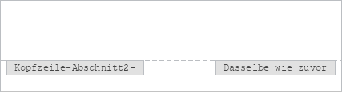

Kopf- und Fußzeilen einfügen
Um eine neue Kopf-/Fußzeile hinzuzufügen oder zu entfernen oder eine bereits vorhandene Kopf-/Fußzeile im Dokumenteneditor zu bearbeiten:
- Wechseln Sie in der oberen Symbolleiste auf die Registerkarte Einfügen.
- Klicken Sie auf das Symbol Kopf-/Fußzeile bearbeiten.
- Wählen Sie eine der folgenden Optionen:
- Kopfzeile bearbeiten, um den Text in der Kopfzeile einzugeben oder zu bearbeiten.
- Fußzeile bearbeiten, um den Text in der Fußzeile einzugeben oder zu bearbeiten.
- Kopfzeile entfernen, um die Kopfzeile zu löschen.
- Fußzeile entfernen, um die Fußzeile zu löschen.
-
Folgende Einstellungen stehen zur Verfügung:

- Passen Sie die Seitennummerierung mit der Schaltfläche Seitenzahl an.
- Fügen Sie Datum & Uhrzeit ein.
- Fügen Sie Feldcodes mithilfe der Schaltfläche Feld ein.
- Fügen Sie Bilder mit Hilfe der Schaltfläche Bild ein.
- Passen Sie die Position der Kopf- oder Fußzeile an, indem Sie die Abstandswerte manuell in die Felder Kopfzeile oberhalb und Fußzeile von unten eingeben.
- Verwenden Sie das Feld Gerade und ungerade Seiten anders, um unterschiedliche Kopf- und Fußzeilen für ungerade und gerade Seiten hinzuzufügen.
- Aktivieren Sie das Kontrollkästchen Erste Seite anders, um der ersten Seite eine andere Kopf- oder Fußzeile hinzuzufügen, oder falls Sie gar keine Kopf-/Fußzeile hinzufügen möchten.
- Die Option Mit vorheriger verknüpfen ist verfügbar, wenn Sie zuvor Abschnitte in Ihr Dokument eingefügt haben. Sind keine Abschnitte vorhanden, ist die Option ausgeblendet. Außerdem ist diese Option auch für den allerersten Abschnitt nicht verfügbar (oder wenn eine Kopf- oder Fußzeile ausgewählt ist, die zu dem ersten Abschnitt gehört). Standardmäßig ist dieses Kontrollkästchen aktiviert, sodass dieselbe Kopf-/Fußzeile auf alle Abschnitte angewendet wird. Wenn Sie einen Kopf- oder Fußzeilenbereich auswählen, sehen Sie, dass der Bereich mit der Verlinkung Wie vorherige markiert ist. Deaktivieren Sie das Kontrollkästchen Wie vorherige, um für jeden Abschnitt des Dokuments eine andere Kopf-/Fußzeile zu verwenden. Die Markierung Wie vorherige wird nicht mehr angezeigt.

Um zur Dokumentbearbeitung zurückzukehren, führen Sie einen Doppelklick im Arbeitsbereich aus. Der Inhalt Ihrer Kopf- oder Fußzeile wird grau angezeigt.